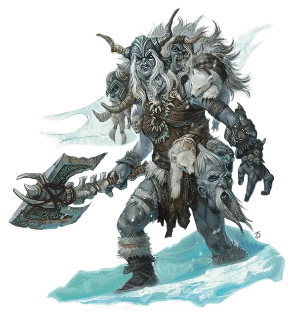

Извечный ледяной великан
Frost Giant Everlasting One
Огромный Великан, обычно хаотично-злой

Класс Доспеха 15 (разнотканый доспех)
Хиты 189 (14к12 + 98)
Скорость 40 футов
| мод | спас | ||
|---|---|---|---|
| СИЛ | 25 | +7 | +11 |
| ЛОВ | 9 | −1 | −1 |
| ТЕЛ | 24 | +7 | +11 |
| мод | спас | ||
|---|---|---|---|
| ИНТ | 9 | −1 | −1 |
| МДР | 10 | +0 | +4 |
| ХАР | 12 | +1 | +1 |
Навыки Атлетика +11, Восприятие +4
Иммунитет к урону холод
Чувства тёмное зрение 60 футов, пассивное Восприятие 14
Языки Великаний
Опасность 12 (8400 опыта)
Бонус мастерства +4
Среда обитания Арктика, Побережье
Особенности
Дополнительные головы. . У великана есть шанс 25 % на наличие дополнительной головы. Если у него больше одной головы, то он получает преимущество на проверки Мудрости (Восприятие) и на спасброски от состояний: ослеплен, очарован, глухой, испуган, ошеломлен или бессознательный.
Регенерация. Великан восстанавливает 10 хитов в начале своего хода. Если гигант получает урон кислотой или огнём, то эта черта не работает в начале его следующего хода. Гигант умирает только если начинает ход с 0 хитов и не может регенерировать.
Действия
Мультиатака. Великан совершает две атаки Секирой или Камнем.
Секира. . Рукопашная атака оружием: +11 к попаданию, досягаемость 10 футов, одна цель. Попадание: 26 (3к12 + 7) рубящего урона, или 30 (3к12 + 11) рубящего урона в ярости.
Камень. . Дальнобойная атака оружием: +11 к попаданию, дистанция 60/240 футов, одна цель. Попадание: 29 (4к10 + 7) дробящего урона.
Бонусные действия
Ярость Вапрака (перезаряжается после короткого или продолжительного отдыха). Великан входит в ярость. Ярость длится 1 минуту или пока великан не станет недееспособен. В ярости великан имеет следующие преимущества:
• Великан получает преимущество на проверки и спасброски Силы;
• Когда он совершает рукопашную атаку оружием, великан получает бонус +4 к броску урона;
• Великан получает сопротивление дробящему, колющему и рубящему урону.
Описание
Чтобы поддерживать свое место или подниматься вверх по уложению, морозный гигант должен постоянно сталкиваться с могучими врагами в дуэли один на один. Некоторые ищут магию, которая может помочь, но зачарованные объекты можно украсть или потерять. Истинное величие лежит в личной доблести. Столкнувшись с этой правдой, морозный гигант может захотеть сверхъестественный дар от Вапрака Уничтожителя.
Вапрак - свирепый бог силы и голода, которому также поклоняются некоторые огры и тролли. Вапраку нравится искушать морозных гигантов снами славы, за которыми следуют кошмары кровавого каннибализма. Те, кто не избегает таких видений или не докладывает о них жрецам Трима, начинают видеть их чаще. Если морозный гигант начинает наслаждаться этими снами и кошмарами, как некоторые, то Вапрак посылает тролля на священное задание отыскать морозного гиганта и в тайне встретиться с ним. Тролль предлагает съесть его собственное тело во имя Вапрака. Только самые смелые и целеустремленные морозные гиганты могут завершить эту кровавую трапезу.
После поедания тролля, присланного Вапраком, целиком и полностью, морозный гигант становится извечным, получает потрясающую силу, злобный характер и регенеративные способности тролля. С такими дарами морозный гигант может быстро заполучить титул ярла и легко давать отпор соперникам десятилетиями Однако, если морозный гигант недостаточно чтит Вапрака или не уделяет внимания его видениям, то ранения морозного гиганта плохо заживают, часто оставляя кожу другого цвета, шрамы покрытые наростами, рудиментарные части тела, такие как дополнительные пальцы, конечности и даже дополнительные головы. После этого касание Вапрака скрыть невозможно и извечного убивают или изгоняют из клана. Иногда небольшие сообщества извечных собираются и даже размножаются, передавая «благословение» и молитвы Вапраку от одного поколения к другому.